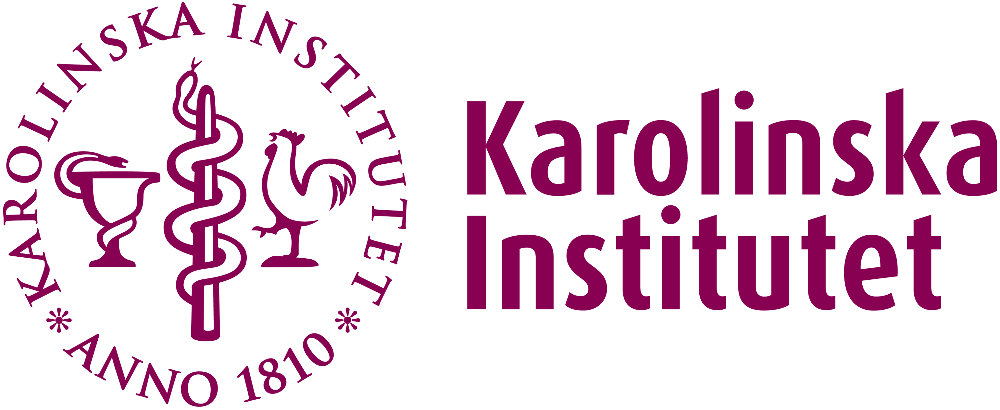

About
I am a biomedical research scientist and molecular biotechnologist. My research experience spans immunology, haematology, cancer biology, regenerative biology, and developmental biology.
My work combines experimental and computational approaches to investigate how immune and tissue-resident cells acquire, maintain, and remodel their identities during development, regeneration, inflammation, and disease. I integrate stem-cell and organoid systems, genome engineering, perturbation-based studies, and multi-omics analyses to explore cellular plasticity, immune regulation, and disease-associated state transitions.
By connecting molecular mechanisms with higher-order cellular and tissue behaviour, I aim to understand how biological systems maintain stability while adapting to environmental and pathological challenges, and how disruption of these processes contributes to disease progression and therapeutic response.
I also serve on the Bio-protocol Peer Reviewer Board, reviewing experimental protocols in molecular biology, cell biology, immunology, cancer biology, and related biomedical sciences.
Professional experience across academia, research institutes, and healthcare settings across Hungary, the United Kingdom, and Sweden.

Professional accreditation
Experimental and computational expertise
- CRISPR-based genome editing, stem cell and organoid systems, advanced microscopy
- Spatial transcriptomics and quantitative imaging of cellular and tissue architecture
- RNA-seq, ATAC-seq, ChIP-seq, NGS library preparation and sequencing QC
- Variant analysis and integrative multi-omics
- Pathway, signalling, and regulatory network analysis
- GWAS and gene–environment interaction modelling
- Machine learning for feature extraction, classification, and biological prediction
- Reproducible, scalable workflows using Snakemake, Conda, and containerised environments
Repositories & projects
My GitHub profile (linked in the sidebar) contains selected public code examples and smaller projects related to genomics, molecular biology, and data analysis.
Some of my current work, including experimental and computational pipelines, is maintained in private repositories during ongoing development. In collaborative or professional contexts, additional technical details can be shared, and access to certain materials may be possible under appropriate agreements.
Publications & research outputs
For a complete and updated list of works, see my ORCID profile.
My detailed CV is available upon request via this link.
Contact
If you would like to get in touch, you can send me a message using the form below.